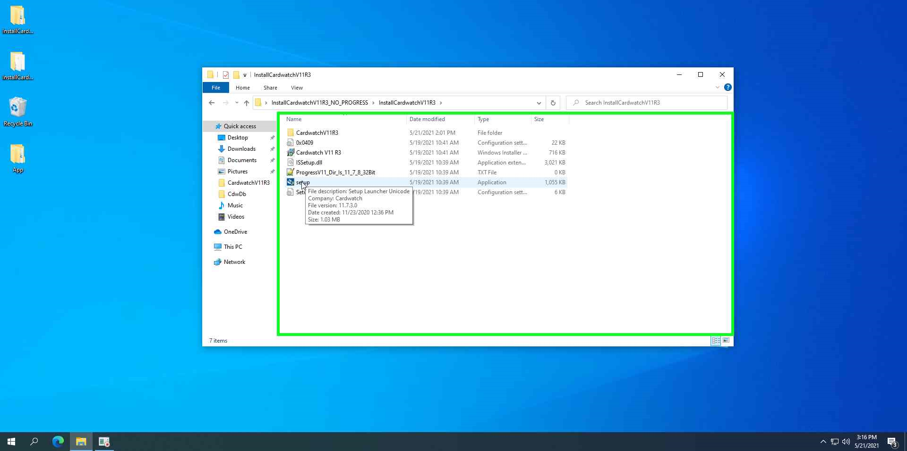

Navigate to Apps & Features, and locate Cardwatch V11 R3.
Select Uninstall, and proceed with the uninstallation process.
Select Remove: Remove all installed features, and proceed.
Extract the installation files from the zipped folder.
Locate the unzipped Cardwatch V11R3 installation folder, and run the setup as administrator. 
Proceed with the installation
Ensure that 11.7 is the selected version of Progress.
Set the desired user and company name, and proceed with the rest of the installation.
The installation will proceed to the Cardwatch settings setup.
For icons to create: If both Back Office and a register / terminal are required on the device, select Both.
If a register is required, the setup will ask which type to create. For our purposes, select Fine Dining, and proceed.
Under Host (Server) Name:
Database Information:
Under REP Database, enter ServerRep and Port 3031, and complete the installation.
Locate the CardwatchV11R3 install folder, and the relevant pf files.
Open the PF file with Notepad.
Edit the host / server name for all databases to the desired / correct name, and save the file.
Repeat this process for any other required PF files as needed.
Locate the CardwatchV11R3 install folder, and the PF file connected to the register shortcut.
Open the PF file with Notepad.
Locate the Location Number & Terminal Number line, and enter the desired location number and terminal number separated by a comma.
Save the changes and exit.